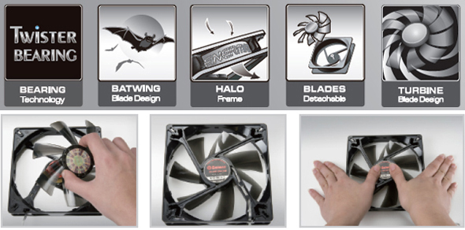
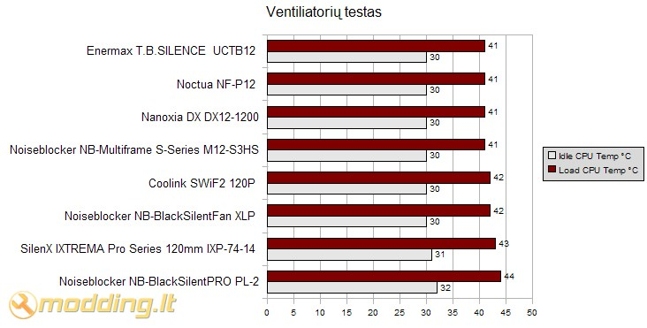

Enermax T.B.SILENCE ventiliatorių apžvalga
 Enermax kompanija pirkėjams siūlo savo naujuosius T.B.SILENCE ventiliatorius, kurie turėtų pasižymėti itin tyliu veikimu. Priešingai nei neseniai apžvelgtieji Apollish Vegas ventiliatoriai, šie atrodo kukliau bei neturi įmontuotų šviesos diodų, tačiau nuo kitų ventiliatorių T.B.SILENCE serijos gaminiai skiriasi savo specifine rėmo bei propelerių menčių forma.
Enermax kompanija pirkėjams siūlo savo naujuosius T.B.SILENCE ventiliatorius, kurie turėtų pasižymėti itin tyliu veikimu. Priešingai nei neseniai apžvelgtieji Apollish Vegas ventiliatoriai, šie atrodo kukliau bei neturi įmontuotų šviesos diodų, tačiau nuo kitų ventiliatorių T.B.SILENCE serijos gaminiai skiriasi savo specifine rėmo bei propelerių menčių forma.
Žvilgsnis iš arčiau
Enermax T.B.SILENCE seriją sudaro keturi skirtingo dydžio ventiliatoriai: 80mm ventiliatorius UCTB8, 92mm - UCTB9, 120mm - UCTB12, bei didžiausias 140mm variantas - UCTB14. 80mm, 92mm ir 120mm ventiliatoriai turi specifinės formos propelerių mentes Batwing Blades. Gamintojų teigimu, tokia menčių forma suteikia ventiliatoriui iki 30 % didesnį oro srautą. Visų T.B.SILENCE serijos ventiliatorių rėme yra aliumininis žiedas, kurio perimetre išdėstytos ventiliacinės angos, pro kurias taipogi vyksta oro cirkuliacija.
Propelerio sukimąsi užtikrina Twister Bearing technologija, kurios dėka mechanizmas sutepamas savaime - to pasekoje ventiliatorius veikia tyliau bei ilgiau tarnauja. Taipogi sumažėja ventiliatoriaus skleidžiamas triukšmo lygis, kas ypač aktuoju norint sukomplektuoti kuo tylesnę sistemą. Detachable blades design - tai dar vienas Enermax kompanijos sukurtas patobulinimas, leidžiantis be didelio vargo išimti iš ventiliatoriaus rėmo propelerį.

T.B.SILENCE-12cm UCTB12
Pakuotės viduje randame:
- T.B.SILENCE UCTB12 ventiliatorių
- 4 vnt. metalinius tvirtinimo varžtus
- 3pin į Molex adapterį
Ventiliatoriaus specifikacijos
- Modelis: T.B.SILENCE UCTB12
- Dydis: 120x120x25mm
- Galia: 1.8 W
- Nominali įtampa: 12V
- Apsisukimai: 900(±10%) rpm
- Oro srautas: 71.54 m³/h
- Oro spaudimas: 0.828 mm H2O
- Triukšmo lygis: 11 dBA
- Ilgaamžiškumas: 100 000 val.
- Guolis: Twister Bearing
- Jungtis: 3 pin
UCTB12 yra 120mm T.B.SILENT serijos ventiliatorius. Propelerį sudaro 9 pusiau skaidraus plastiko mentės. Mentės nėra standartinės formos - jos išgaubtos. Enermax savo sukurtą specifinę menčių formą pavadino Batwing Blades (šikšnosparnio sparnų mentės). Pasak gamintojo, toks menčių patobulinimas turėtų pagerinti oro srautą esant tokiems pat apsisukimams. Ventiliatoriaus rėmas taipogi nėra standartinis - jis turi aliumininį rėmą bei ertmes jame. Ertmės - Enermax užrašai. Jie išdėstyti visuose ventiliatoriaus šonuose. Gamintojo nurodomas triukšmo lygis - vos 11 dbA. Kažin ar toks skaičius realus ir kaip buvo nustatomas šis dydis, vienintėlis būdas sužinoti ar jis išties tyliai veikia - išmėginti ventiliatoriau veikimą korpuse.
T.B.SILENCE 14cm - UCTB14
Pakuotės viduje randame:
- T.B.SILENCE UCTB12 ventiliatorių
- 4 vnt. metalinius tvirtinimo varžtus
- 3pin į Molex adapterį
Ventiliatoriaus specifikacijos
- Modelis: T.B.SILENCE UCTB14
- Dydis: 139x139x25mm
- Galia: 1.8 W
- Nominali įtampa: 12V
- Apsisukimai: 750(±10%) rpm
- Oro srautas: 77.13 m³/h
- Oro spaudimas: 0.882 mm H2O
- Triukšmo lygis: 15 dBA
- Ilgaamžiškumas: 100 000 val.
- Guolis: Twister Bearing
- Jungtis: 3 pin
UCTB14 ventiliatorius turi 7 menčių, turbinos formos prelerį, kuris pagamintas iš pusiau skaidraus juodo plastiko. Ventiliatoriaus rėmas Carved Halo Frame - su aliumininiu žiedu bei ertmėmis. Naudojamas Twister Bearing guolis. Maitinimo laidas permatomos gumos apvalkale. Idomus rėmo elementas - tvirtinimo skylės. Jos šiek tiek skiriasi nuo standartinių: skylės tarsi trijų padėčių, tačiau sujungtos tarpusavyje. Ventiliatoriau mentės įprastos formos, priešingai nei 120mm varianto, kur panaudota Batwing Blades menčių forma.
Rezultatai
Testavimo sistema:
- CPU Cooler - Noctua NH-U12P SE2 radiatorius su skirtingais ventiliatoriais
- Case - Antec Mini P180
- Mainboard - Asus M2N68-AMSE2
- CPU - AMD ATHLON 64 X2 Dual-Core 5000+ AM2 (65W)
- RAM - Corsair DDR2 KIT 2X1G 800MHZ TWIN2X2048-6400 G
- HDD - SEA BARRACUDA 160GB 7200rpm
- PSU - Cooler Master Silent Pro M700
- Case Fans - Noctua NF-S12B FLX 120mm (1200rpm, 100.6 m³/h, 1.31 mm H2O), Antec 200mm TriCool (400rpm, 39 CFM)
Procesoriaus (CPU) temperatūra testuojama Idle ir Load rėžimais. Load rėžimui naudojama Orthos programa. Temperatūros rodmenys stebėti SpeedFan 4.39 bei PC Probe II V1.04.74 programomis. Testavimams naudotas Antec Mini P180 korpusas galinėje sienelėje turi Noctua NF-S12B FLX 120mm orą ištraukiantį aušintuvą (1200rpm, 100.6 m³/h, 1.31 mm H2O), o taip pat viršuje esantį, orą ištraukiantį, Antec 200mm TriCool ventiliatorių (400rpm, 39 CFM).
Testuose palygintos CPU temperatūros aušinant jį Noctua NH-U12P SE2 aušintuvu naudojant vieną Enermax T.B.SILENCE UCTB12 120mm ventiliatorių, vieną NB-Multiframe S-Series M12-S3HS, vieną Nanoxia DX DX12-1200, vieną SilenX IXTREMA Pro Series, vieną SWiF2 120P ventiliatorių, vieną NB-BlackSilentPRO PL-2, vieną NB-BlackSilentFan XLP arba vieną Noctua NF-P12 ventiliatorių. Visų ventiliatorių apsukos nustatytos ~1000 rpm panaudojus Noiseblocker NB-Fanspeed Controller.

Gamintojas nurodo, jog UCTB12 120mm ventiliatoriaus apsukos yra 900(±10%) rpm. Mano testuotas ventiliatorius sukosi didesniu greičiu, todėl naudodamas apsukų geruliatorių, ventiliatoriaus apsukas nustačiau ~1000 rpm.
Atlikęs testus nenusivyliau: Enermax T.B.SILENCE UCTB12 ventiliatoriaus efektyvumas nenusileido nė vieno testuose dalyvavusio ventiliatoriaus efektyvumui. Norėčiau paminėti, jog UCTB12 ventiliatorius veikė išties labai tyliai ir be jokių pašalinių triukšmų. Šį aušintuvą galima naudoti be papildomų apsukas mažinančių adapterių, nes gamykliškai jis turi nedidelias apsukas bei mažą triukšmo lygį.
Išvados
Pliusai:
- geri aušinimo rezultatai
- tylus veikimas
- stilingai atrodantis
- 3pin į Molex adapteris komplekte
- nerasta
 Enermax T.B.SILENCE ventiliatoriai pasižymi tyliu veikimu, geru aušinimu ir novatorišku dizainu.
Batwing Blades - specifinės formos propelerių mentės atrodo išskirtinai, o taip pat pagerina ventiliatoriaus charakteristikas. Dar vienas nestandartinis T.B.SILENCE serijos ventiliatorių konstrukcinis sprendimas -
Carved Halo Frame, tai ventiliatoriaus rėmas su aliumininiu žiedu bei ertmėmis. Enermax T.B.SILENCE UCTB12 ventiliatoriaus efektyvumas nenusileido nė vieno testuose dalyvavusio ventiliatoriaus efektyvumui. 120mm ventiliatoriaus kaina ~35lt, todėl jis gali būti geru pasirinkimu renkantis gaminį iš vidutinio brangumo ventiliatorių segmento. Susumavęs visus pliusus bei atliktų testų rezultatus
Enermax T.B.SILENCE ventiliatoriams skiriu
9 balus iš 10 bei
modding.lt Renkasi apdovanojimą.
Enermax T.B.SILENCE ventiliatoriai pasižymi tyliu veikimu, geru aušinimu ir novatorišku dizainu.
Batwing Blades - specifinės formos propelerių mentės atrodo išskirtinai, o taip pat pagerina ventiliatoriaus charakteristikas. Dar vienas nestandartinis T.B.SILENCE serijos ventiliatorių konstrukcinis sprendimas -
Carved Halo Frame, tai ventiliatoriaus rėmas su aliumininiu žiedu bei ertmėmis. Enermax T.B.SILENCE UCTB12 ventiliatoriaus efektyvumas nenusileido nė vieno testuose dalyvavusio ventiliatoriaus efektyvumui. 120mm ventiliatoriaus kaina ~35lt, todėl jis gali būti geru pasirinkimu renkantis gaminį iš vidutinio brangumo ventiliatorių segmento. Susumavęs visus pliusus bei atliktų testų rezultatus
Enermax T.B.SILENCE ventiliatoriams skiriu
9 balus iš 10 bei
modding.lt Renkasi apdovanojimą.
Modding.lt komanda dėkoja Alexandra Kogan iš www.enermax.de už apžvalgai suteiktą produktą.
Jei norėsite pakomentuoti straipsnį ar pareikšti savo nuomonę, apsilankykite Modding.lt forume.


{kind=link}
{kind=link}
{kind=link}
{kind=link}
{kind=link}
{kind=link}
{kind=link}
{kind=link}
{kind=link}
{kind=link}
{kind=link}
{kind=link}
{kind=link}
{kind=link}
{kind=link}
{kind=link}
{kind=link}
{kind=link}